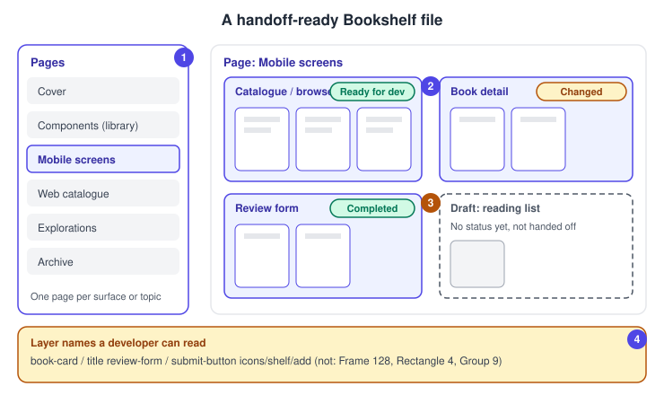
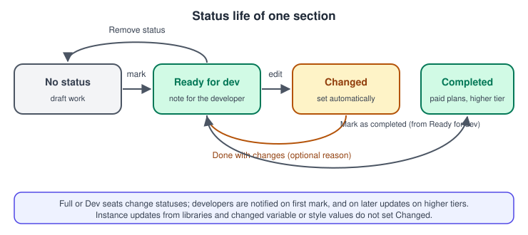
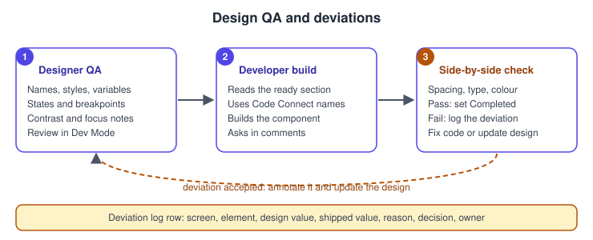

Preparing Files for Handoff
|
This content was generated with the assistance of AI and should be verified against the official documentation before being relied on in production. |
This page was checked against the official Figma documentation on 2026-10-30 and describes the UI3 interface of Figma Design. Preparing a file for handoff is mostly craft that needs no paid seat: organising pages, sections and layer names, and using components, variables and styles. Three parts depend on the plan and seat. Dev statuses (Ready for dev) are available on the Professional, Education, Organization, Government and Enterprise plans and need a Full or Dev seat to change; the Completed status and some notifications need a higher tier, and the status help articles state these tiers slightly differently, so check the current plan table before relying on them. Annotations need edit access and a Full seat to add (a Full or Dev seat to view them) on the same plans. Dev Mode itself is generally available; none of the features here is in beta.
The running example is the Bookshelf mobile app. The designer has finished the catalogue, book detail and review form screens and needs a developer to build them without a meeting for every spacing value. Containers are described on Frames, Groups and Sections, reusable parts on Components and Instances, and the tokens that developers consume on Variables, Collections and Modes. The developer side of the tool is on Dev Mode and the mapping of components to code on Code Connect.
What handoff means
Handoff is the moment a design stops being exploration and becomes a specification that someone else implements. In practice it is not a single moment: Figma’s own help article notes that handoff often involves several iteration cycles, so designs are revised more than once before they are built. A good file therefore makes three things easy for the developer: finding what is final, understanding intent (what is fixed, what is responsive, what is a state), and noticing when something changed.
File structure for developers
Dev Mode changes how the left sidebar behaves: it becomes the main way to move between designs and to see which ones are ready for development. A Dev Mode icon marks pages that contain designs marked ready, and designs marked ready are listed under a Ready for development heading. Sections are prioritised: content outside sections stays visible in the left sidebar but is collapsed by default. That is the practical reason to put every final screen in a section.

-
Pages separate surfaces and topics: one page per surface (mobile screens, web catalogue), a cover page, a page for components if the file is not a library, and an explorations or archive page for work that must not be built.
-
Final screens sit in sections, one section per feature or flow, named for the feature rather than for the date. Keep a user flow together in one section, because in Dev Mode the left and right arrow keys move between top-level frames on the page.
-
Exploration and rejected variants live in separate sections or pages, without a status, so they are not mistaken for specifications.
-
Layer names carry intent: name the layers a developer will read (regions such as a header or a main content area, buttons, icons), and let AI renaming help only as a first pass.
Naming
Figma does not enforce a naming scheme, so agree one with the developers and keep it stable. A slash in a layer name creates folders on export, which is why the same convention serves both layers and files (see Exporting Assets).
| Item | Bookshelf convention |
|---|---|
Page |
|
Section |
Feature name, for example |
Top-level frame |
Screen and state, for example |
Component |
Slash path matching the code, for example |
Icon |
|
Variable |
Group path, for example |
If the code syntax of variables or Code Connect is set, the names developers see in Dev Mode are the code names, so the design names matter less there, but they still matter to the people reading the layers panel.
Use the system, then say where you left it
Developers read what Dev Mode shows: values bound to variables and styles appear as names, and instances appear as components. A file that uses components, variables and styles gives a developer a vocabulary; local overrides, detached components and raw hex values give them numbers to guess from. Before handoff, check that typography, fills, spacing, component properties and variants come from the design system (see Design Systems in Figma and Libraries and Publishing). If you detached a component or deviated on purpose, say why in a comment thread or an annotation; Dev Mode still shows the details of detached components and lets a developer compare them to the original.
Responsive behaviour needs words as well as pictures. Auto layout gap and padding show up in Dev Mode and map to layout code (see Auto Layout), but whether a value is fixed or responsive, or what happens at other breakpoints, is intent that Figma’s handbook recommends stating in an annotation.
Statuses
A status marks a section, frame, component or instance for the developer. Ready for dev says that the design is final enough to implement; Completed says the development work is done. A third state, Changed, is applied automatically to a marked design that was modified, and cannot be set by hand.

| Item | Detail (checked 2026-10-30) |
|---|---|
Plans |
Statuses are available on Professional, Education, Organization, Government and Enterprise. Marking Completed and updating a changed design need Education (K-12), Organization, Government or Enterprise. |
Seats |
A Full or Dev seat changes statuses. The ready for dev view can also be opened with a View seat in the documented cases; verify in the current article. |
Set Ready for dev |
In Figma Design or Dev Mode, select the item and click Mark as ready for dev. For sections and frames the button is next to the label; for components it is above the upper-right corner. You can add a note for the developer. |
Set Completed |
Click Ready for dev on the item, then choose Mark as completed. |
Remove |
Click the status and choose Remove status. |
After a change |
Click the status on the updated item, optionally enter a reason (it appears in version history and in notifications) and click Done with changes. The status returns to Ready for dev and the Changed state clears. |
Not detected as a change |
A library component instance that was updated, a variable or style value changed after it was attached to a layer, and temporary changes such as hovering over auto layout. |
The last row is a real pitfall: a token edit that changes every button does not flag any screen as Changed, so tell the developers about library publishes and variable changes yourself (see Version History and Branching for versions and named versions).
Notifications
By default all plans send email, desktop and mobile push notifications, and Slack and Microsoft Teams can be added through integrations (not on Government plans). People who have opened the file in Dev Mode with a Full or Dev seat are notified when a design is first marked Ready for dev; on the higher-tier plans they are also notified when a changed design’s status is updated and when a design is marked Completed. Several changes within an hour are grouped by type, so mark everything in one pass instead of one section at a time. To manage them, turn on Dev Mode (Shift D), enter comment mode ©, open Settings in the right sidebar and choose Status changes or Nothing.
The ready for dev view and focus view
Developers open the ready for dev view from the left sidebar. It appears only in files where at least one design has a status, lists each design with its status, shows when it was last updated, and can be filtered (all, ready, completed) and sorted (recent activity, pages, name). Selecting a design opens its focus view, which isolates that design while keeping inspection, version history and the other Dev Mode tools. Treat the status as a signal, not a lock: a design marked ready stays editable, which is why the Changed state exists.
Annotations and measurements
Statuses say what is ready; annotations say what to notice. An annotation flags properties such as spacing and sizing, a text note, or both, and property callouts update when the design changes. They can be created in Design mode or Dev Mode with Shift T or the toolbar; measurements use Shift M. Four preset categories are provided (Development, Interaction, Accessibility and Content), which editors can rename, recolour, add or delete; categories apply to the current file only. Annotations are shown by default in Dev Mode and can be filtered by category. Holding Option (macOS) or Alt (Windows) measures distance on any plan, but that measurement cannot be saved or shared; a saved measurement needs the annotation features above. Annotations can also be created in bulk through the Plugin API.
Use them sparingly, for the facts the picture cannot carry:
-
Behaviour: what is fixed and what stretches, minimum and maximum widths, what happens at other breakpoints.
-
Interaction: what a tap does, which state shows while loading, the error and empty states (see Interactive Components and Microinteractions).
-
Accessibility: focus order, accessible names, reading order, contrast decisions (see Accessible and Inclusive Design in Figma).
-
Content: where text comes from (a CMS, an API) and the longest title that must still fit.
Procedure: hand off the Bookshelf catalogue screen
-
In Design mode, select the catalogue frames and wrap them in a section named
Catalogue / browse. Rename top-level frames to screen and state, for examplecatalogue / default. -
Move rejected layouts to the
Explorationspage and delete hidden or empty layers that do not belong to the design. -
Check that the book cards are instances of the
book-cardcomponent, that fills and text use variables and styles, and that nothing is a detached copy without a reason. -
Add annotations in the Development category for the cover aspect ratio (fixed) and the grid (responsive: two columns on mobile), and in the Accessibility category for the focus order of the cards and the label of the add-to-shelf button.
-
Set export settings on the shelf icon and any illustration (see Exporting Assets).
-
Run the checklist below, then switch to Dev Mode (Shift D) and look at the section as the developer will: values, names, annotations and assets.
-
Select the section and click Mark as ready for dev. Write a one-line note for what is new in this round.
-
Send the developer a link to the file or to the ready for dev view and say which sections to read first. Stay available for questions in comments (see Comments and Real-Time Collaboration).
Handoff checklist
The list below is a working checklist distilled from the official sources above; Figma does not publish it as a fixed checklist, so adapt it to your team.
| Area | Check |
|---|---|
Structure |
Final screens are in named sections; explorations are elsewhere; each flow reads left to right. |
Names |
No default names such as |
System |
Components, variables and styles are used; every detachment or deviation is explained. |
States |
Default, hover, pressed, focus, disabled, loading, empty and error states exist where they apply. |
Responsive |
Breakpoints exist or are annotated; fixed and responsive values are stated. |
Assets |
Export settings are set for icons, images and illustrations; the source of real content is noted. |
Accessibility |
Contrast is checked, focus order and accessible names are annotated, touch targets are large enough. |
Status |
Sections are marked Ready for dev with a note; the developer knows the link. |
After handoff |
Changes are made on the same section and updated with Done with changes and a reason. |
Design QA
Design QA is the comparison of the built screen with the design, done by the designer with the developer, ideally while the feature is still on a branch. It is a team practice rather than a Figma feature, but Dev Mode supports its inputs: values and code for the design, Compare changes to see what changed since the developer last looked, and the ready for dev view to see which designs are expected to be built.

-
Before handoff, the designer reviews the file in Dev Mode (see the procedure above).
-
During the build, the developer asks questions in comments on the relevant frame and checks Compare changes when a status shows Changed. Compare changes needs a Professional, Education, Organization, Government or Enterprise plan; it labels edited, added and deleted layers, offers side-by-side and overlay views, and shows code and property differences.
-
When a screen is built, compare it with the design at the same size: spacing, type scale, colour, states, and the behaviour described in annotations. Use the real device or browser, not a screenshot scaled to match.
-
If it matches, set Completed where your plan supports it. If not, decide whether to change the code or the design.
Documenting deviations
Shipped software rarely matches the design exactly: a platform component replaces a custom one, a token is rounded, a state is cut for time. What matters is that the difference is a decision, not an accident. Keep a deviation log next to the work, in a ticket or in the file’s cover page, with one row per difference.
| Screen | Element | Design | Shipped | Reason | Decision |
|---|---|---|---|---|---|
Catalogue |
Card radius |
12 |
8 |
Platform card style |
Accept, update design |
Review form |
Submit button |
Primary variant |
Native button |
Accessibility library limitation |
Accept for v1 |
Book detail |
Cover shadow |
Elevation 2 |
None |
Performance on low-end devices |
Fix in v2 |
When a deviation is accepted, update the design so the file stays the source of truth: change the component, publish the library, and mark the affected section as updated. If the file and the product disagree for long, developers stop trusting the file.
Cheat sheets for developers
A one-page note at the top of the cover page saves repeated questions. Suggested content for Bookshelf (a team convention, not a Figma feature):
-
the naming scheme for pages, sections, frames, components and variables
-
the status vocabulary and who sets it
-
where the library, the repository and the ticket board live
-
the units and breakpoints in use
-
how to ask a question (comment on the frame, tag the designer)
-
a link to the deviation log
Developers who work in an editor can also read designs without leaving it through the Figma for VS Code extension, described on Desktop, Mobile and VS Code, and AI coding tools can read the same file through the Figma MCP server, which benefits from the same clean names and components.
Pitfalls
-
Marking everything Ready for dev at once: developers cannot tell what is new. Mark by section and write a note.
-
Assuming a status is a lock. Designs stay editable and the Changed state, with a reason, is the signal.
-
Forgetting that library updates, variable values and style values do not flag a design as Changed.
-
Leaving explorations on the same page as final screens.
-
Default layer names, detached components and unexplained overrides.
-
Relying on measurements made with Option or Alt: they cannot be saved or shared.
-
Expecting every plan to have Completed or all notifications; they depend on the plan tier.
What older guides say
Older handoff guides describe the Inspect tab and a flow where developers copy values from a view-only link, and some predate the status workflow. Dev Mode replaced Inspect, became a paid Full or Dev seat feature on 2024-01-31, and gained statuses, a ready for dev view, focus view, compare changes and annotations. UI3 has been the only interface since 2025-04-30. Old advice to use "paid seats" and "viewer seats" is replaced by the Full, Dev, Collab and View seat model in force since 2025-03-11.